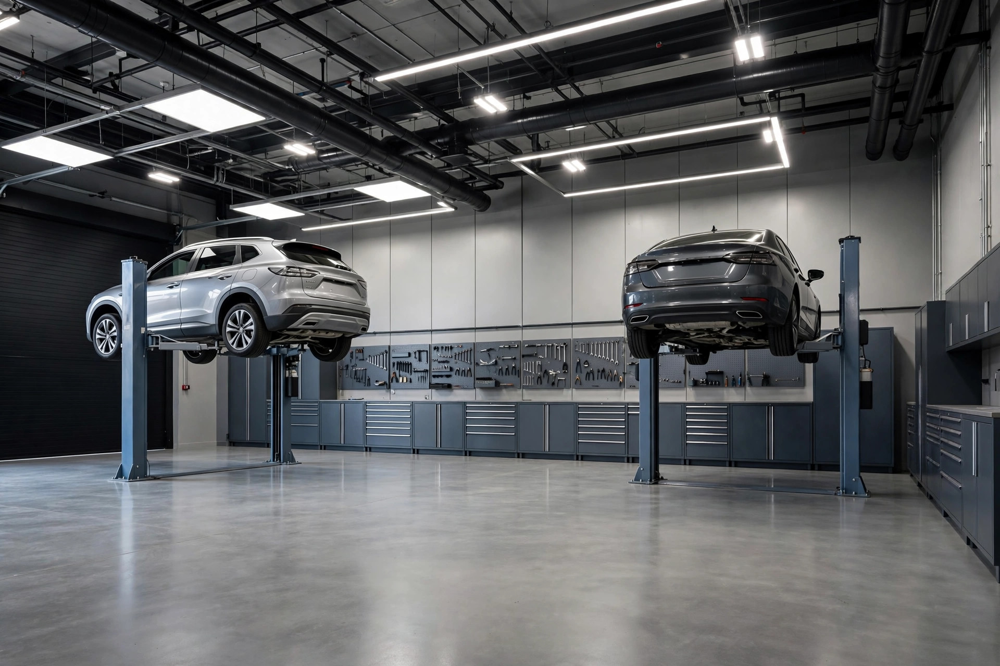

Questions, answered straight
Everything drivers ask us before their first visit, answered the way we answer in the shop: plainly.
Drivers across North York choose Apex Collision Center for honest car servicing: real diagnosis before any quote, written upfront pricing, quality parts, and every repair road tested. Visit us at 4544 Dufferin Street, call (289) 544-2727, or book online. We service all makes and models, Monday to Saturday.
We are at 4544 Dufferin Street in North York, Ontario, M3H 5X2, easy to reach from the 401 and Finch Avenue. Free parking is available right at the shop.
We are open Monday to Friday from 9:00 AM to 5:00 PM and Saturday from 10:00 AM to 3:00 PM. We are closed on Sundays.
Walk ins are welcome for inspections, diagnostics and quick services like oil changes and battery checks. For bigger repairs we recommend booking ahead so we can have the parts and a lift ready for you. Call (289) 544-2727 or use the booking form.
Yes. We service domestic, Asian and European vehicles of all makes and models, from compact cars to SUVs and light trucks.
Every repair starts with diagnosis and a written quote with parts and labour broken out. We explain the findings in plain language and nothing gets done without your approval first.
Yes. We install quality parts that meet or exceed manufacturer specifications, and we will always tell you what is going on your car before we install it.
Absolutely. Our waiting area is comfortable, and most maintenance services like oil changes, battery checks and inspections are done within the hour.
Call or text (289) 544-2727, email mustafa@apexcollisioncenter.ca, or fill out the booking form on our contact page. Tell us your vehicle and what it needs and we will confirm your time.
Your car deserves the Apex treatment
Call, email or book online. We will diagnose the issue, give you an upfront price, and get you back on the road with work done right the first time.